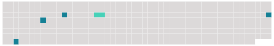

Longueur nb maillons : 5 mentions |
|
Sans préjudice des dispositions de l'article 25 de la présente convention et sous réserve du paragraphe 2 ci-dessous, les limites de responsabilité prescrites aux articles 21, 22 et 23 sont révisées par le dépositaire tous les cinq ans, la première révision intervenant à la fin de la cinquième année suivant la date d'entrée en vigueur de la présente convention, ou si la convention n'entre pas en vigueur dans les cinq ans qui suivent la date à laquelle elle est pour la première fois ouverte à la signature, dans l'année de son entrée en vigueur, moyennant l'application d'un coefficient pour [inflation] correspondant au taux cumulatif de [l'inflation] depuis la révision précédente ou, dans le cas d'une première révision, depuis la date d'entrée en vigueur de la convention.
La mesure du taux d' [inflation] à utiliser pour déterminer le coefficient pour [inflation] est la moyenne pondérée des taux annuels de la hausse ou de la baisse des indices de prix à la consommation des États dont les monnaies composent le droit de tirage spécial cité au paragraphe 1 de l'article 23. [6 phrases] Nonobstant le paragraphe 1 du présent article, la procédure évoquée au paragraphe 2 du présent article est applicable à tout moment, à condition qu'un tiers des États parties exprime un souhait dans ce sens et à condition que le coefficient pour [inflation] visé au paragraphe 1 soit supérieur à 30 % de ce qu'il était à la date de la révision précédente ou à la date d'entrée en vigueur de la présente convention s'il n'y a pas eu de révision antérieure. |
 |
Il est possible de télécharger la ressource sur la page Ortolang |
Si vous avez des questions ou vous voyez des erreurs, merci d'envoyer un mail à silvia.federzoni89@gmail.com |